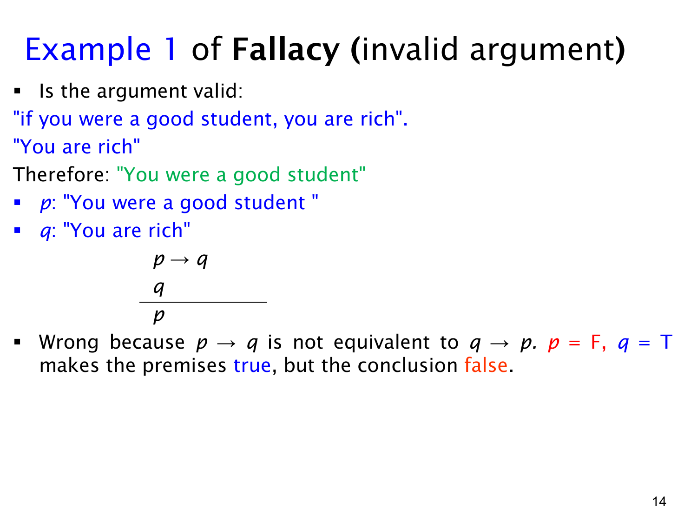

L1.3 · 第 14 页讲解原文
查看这一页课件

谬误例题（一）：肯定后件不能推出前件
课件给出的论证是：“如果你曾是好学生，那么你现在富有；你现在富有；所以你曾是好学生。”令 p 表示“你曾是好学生”，q 表示“你现在富有”，其形式为
p→qqp
这种从 p→q 与 q 推 p 的形式称为肯定后件的谬误，是无效论证。p→q 只说 p 发生时 q 会发生，并未说 q 只能由 p 引起。因此即使 q 真，p 仍可能假；不能偷偷把 p→q 改成其逆命题 q→p。
课件给出一个真值反例：设 p=F、q=T。这时 p→q 因前件假而为真，第二个前提 q 也真，但结论 p 假。于是存在“所有前提真、结论假”的赋值，论证无效。
这个判断只针对推理形式，无需讨论现实中好学生与财富是否有联系。对照有效的肯定前件：从 p 与 p→q 才能推出 q；本题给出的却是 q，方向正好不同。读条件句时要始终保留“若前件，则后件”的箭头方向。